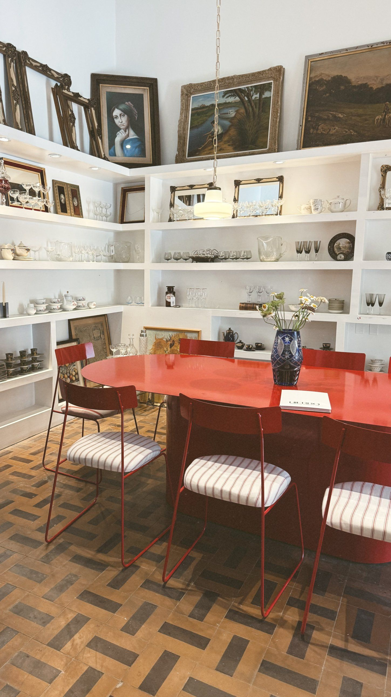
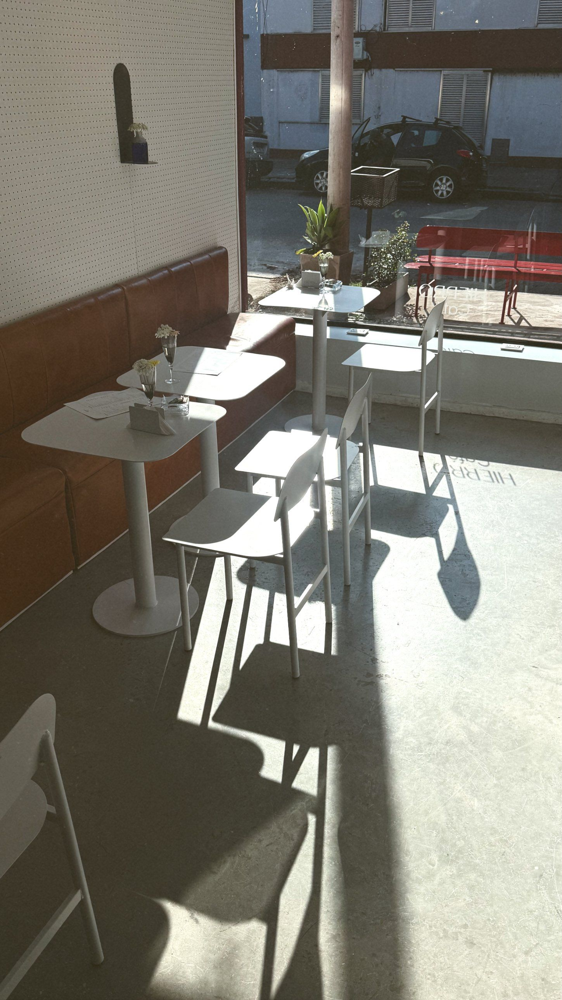
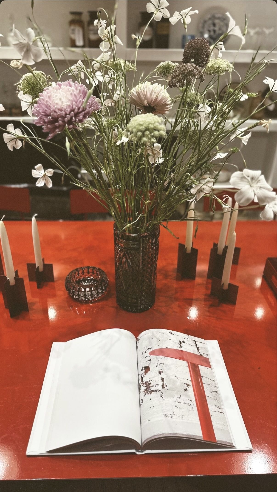
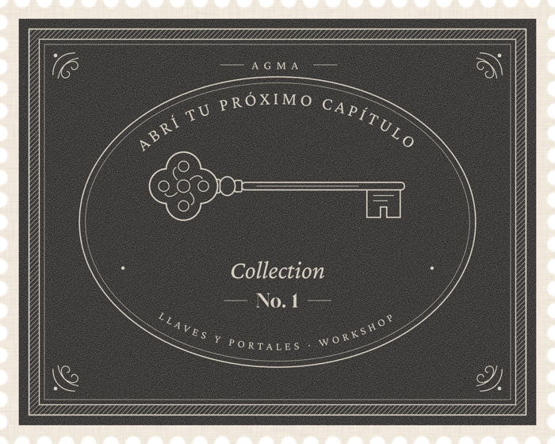
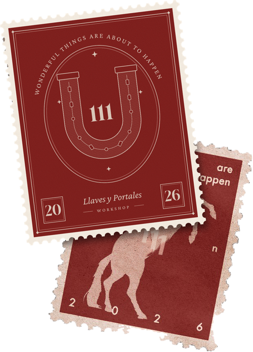
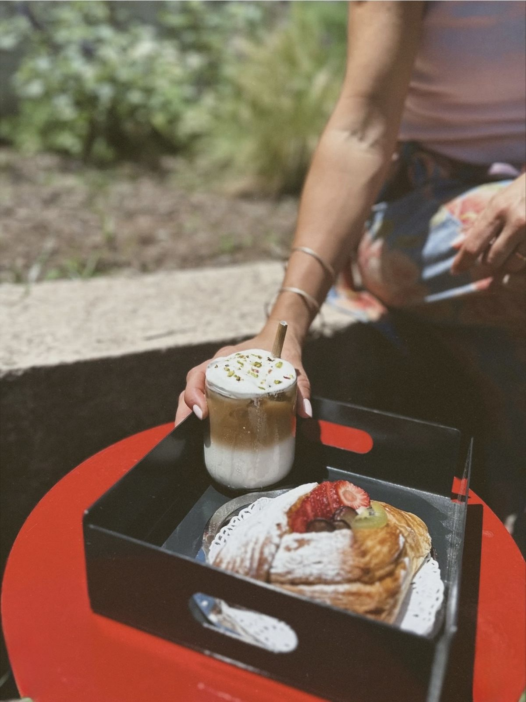
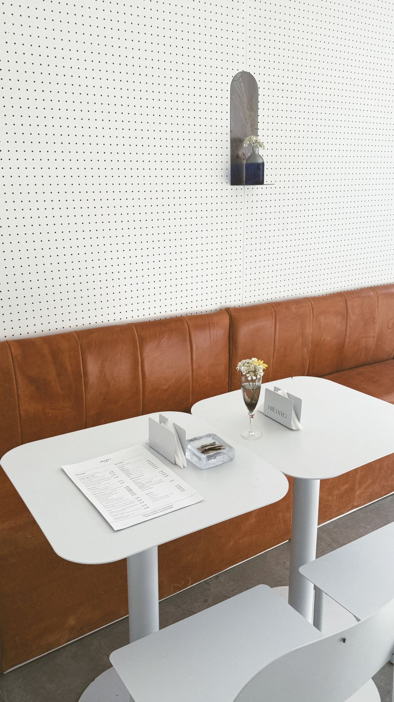
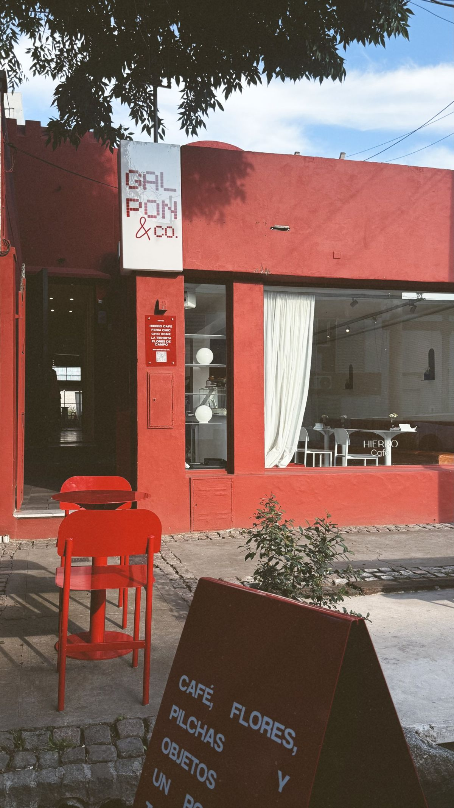

LLAVES
PORTALES
Para mujeres líderes de negocio que quieren que el 2027 sea el año del salto.
Ideas tenés de sobra. Lo que buscás es foco, un plan concreto y entender qué te frena a la hora de ejecutarlo.
Quiero mi lugar"Livianita, poderosa y enfocada"
Salís con tu punto ciego identificado, tu propuesta comercial central del año elegida y tu primer trimestre en acciones, listo para empezar a ejecutar desde enero.




SI ESTÁS ACÁ, ALGO DE ESTO TE VA A SONAR:
Terminás el año con la agenda explotada pero con una sensación rara de no saber si realmente estás avanzando.
Hay una decisión que venís pateando hace meses. La inversión, el precio, esa delegación. La tenés clarísima y sin embargo ahí sigue, esperándote. Algo te inhabilita.
Pulís todo mil veces antes de mostrarlo. Proyectos que podrían estar dando frutos hace meses siguen guardados, esperando "estar perfectos".
Lograste cosas que hace dos años eran un sueño. Y en vez de festejarlas, ya estás corriendo atrás de la próxima meta, con la sensación de que nunca alcanza.
Tenés una planificación, pero a los pocos meses la urgencia te come la agenda y empezás a vivir apagando incendios sin un sistema que te acompañe.
CAMBIEMOS EL SPOTLIGHT
Sí, ya se que creés que te faltó organización. Pero mirá de nuevo tu año: la inversión que pateaste estaba clarísima en tu plan, el tema es que cuando tocó ejecutarla, apareció la duda.
También sé que me vas a decir que "te faltó tiempo". El problema es que tu agenda estuvo llena de tareas operativas que elegiste porque eran más cómodas que la decisión importante. Y sin una prioridad clara, cualquier urgencia le terminó ganando a tu estrategia inicial.
[ Y ASI PODRIA CONTINUAR ]
Por eso en esta mañana trabajamos las dos cosas: la estrategia que ordena tu año y lo que se activa en vos cuando te toca ejecutarla.

QUÉ VAS A LOGRAR
✓ Cerrar tu 2026 con un balance estratégico para saber cuál es la siguiente pieza a mover.
✓ Ponerle nombre a tu punto ciego y entender su raíz, para que deje de trabarte y condicionarte.
✓ Elegir tu propuesta central 2027 con total claridad y actualizar tu pitch de marca.
✓ Tener tu primer trimestre planificado con acciones concretas y trackeables.
✓ Potenciar tu creatividad y tu liderazgo con dinámicas diseñadas para desbloquear ideas.
✓ Avanzar en ese proyecto o idea que siempre postergás.
✓ Conectar con mujeres líderes como vos, que buscan crecer como vos.
GALPÓN & CO
Sarmiento 3060, Santa Fe. Un lugar lleno de arte y estética para pensar el negocio en un entorno que inspira.



Te cuento por qué lo armé así.
🗝️ Planificar el año es algo que ya hiciste muchas veces. Lo nuevo es hacerlo desde la mirada de la Biodescodificación Empresarial®: es el primer workshop que une estrategia y desprogramación en la misma mañana. Mientras armás tu plan, vamos a ir viendo qué creencias y miedos se meten en cada decisión, para que el plan que escribas sea uno que realmente puedas ejecutar.
🗝️ Me he ido de muchos talleres con grandes ideas, pero CERO claridad sobre el paso siguiente. Por eso lo diseñé como un WORKshop de verdad: tres horas intensivas con tiempo real para hacer, decidir y dejar tu plan avanzado. Sé que cuando liderás un negocio el tiempo no sobra, y por eso quiero que cada minuto te rinda.
🗝️ Porque liderar un negocio puede ser muy solitario, pero pensarlo rodeada de otras mujeres que también están frente a su umbral te cambia la mirada. Te das cuenta de que tus dudas tienen nombre, de que tus miedos son más comunes de lo que creías y de que no tenés que resolverlo todo sola. Ahí se arma algo que va más allá del plan: una red.
🗝️ El trabajo empieza antes del sábado 5/12. Con la inscripción te llega un formulario de balance de 15 minutos para que repases tu año sin apuro. Así llegás con eso ya pensado y la mañana la usamos para profundizar y decidir.
🗝️ Es la primera edición en Santa Fe. Hace tiempo quería que esta conversación existiera acá, sin tener que viajar a otras ciudades para tenerla. Las que vengan el 5 de diciembre van a ser el grupo fundadoras de algo que recién empieza.
TU LUGAR EN LLAVES Y PORTALES
3 horas de trabajo presencial en una mesa junto a líderes de negocio.
Desayuno de cafetería.
Plantillas y workbooks exclusivos para llevarte tu 2027 organizado.
Formulario de balance previo para llegar con tu año ya repasado.
Inscripción abierta hasta el jueves 03/12 o hasta completar los 10 lugares.
¿Estás lista para cruzar el portal y liderar tu negocio desde otro lugar este 2027?